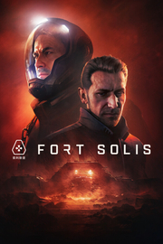

Fort Solis
Fort Solis
Detalles
|  | |
| Tiempo de juego | No Jugado |
| Última actividad | Nunca |
| Añadido | 1/27/2025 22:34:08 |
| Modificado | 1/29/2025 14:25:28 |
| Estado de finalización | Not Played |
| Librería | Playnite |
| Fuente | 2TB DATOS |
| Plataforma | Macintosh PC (Windows) |
| Fecha de lanzamiento | |
| Puntuación de la Comunidad | 67 |
| Puntuación de la Crítica | |
| Puntuación de usuario | |
| Género | Aventura |
| Desarrollador | Black Drakkar Games Fallen Leaf |
| Editor | Dear Villagers |
| Característica | Cloud Saves Compat. Total Con Mando Cromos De Logros De Préstamo Familiar Un Jugador |
| Enlaces | Punto de encuentro Discusiones Guías Noticias Página de la tienda PCGamingWiki Logros |
| Tag | 3D Aventura Buena trama Ciencia ficción Cinematográficos Espacio Eventos rápidos Exploración Ficción interactiva Futuristas Lineales Marte Misterio Narración Oscuros Realistas Simulador de caminar Suspense Tercera persona Un jugador |
Descripción

Te damos la bienvenida a Fort Solis
Tras responder a una llamada de emergencia un tanto inusual procedente de una base minera, Jack llega al oscuro y desolado Fort Solis. Ante las advertencias de una tormenta inminente, decide dirigirse al interior en busca de algún contacto. A medida que la noche avanza, la situación se complica, se descontrola y Jack comienza a descubrir lo que le ocurrió a la tripulación del lugar. Pronto llegará la tormenta y nadie podrá salir, por lo que tendrá que resistir hasta la mañana.

Una historia que te atrapará
Fort Solis pretende ofrecer una experiencia de alta fidelidad para que los jugadores puedan sumergirse de lleno en los personajes y su aventura nocturna. Con las voces de Roger Clark, Troy Baker y Julia Brown, Fort Solis hará que los jugadores sientan el miedo, la empatía y otras muchas emociones con cada capítulo de la historia.
La historia principal se apoya en otros elementos narrativos como registros de audio, grabaciones de seguridad y fragmentos del pasado que conducen a los acontecimientos del presente. También cuenta con grabaciones de vídeo realizadas por los miembros de la tripulación. En ellos se detallan los eventos anteriores e incluso posteriores a la noche que sonaron las alarmas en Fort Solis.

¡Una experiencia cinematográfica única!
La historia se divide en cuatro capítulos. Podrás hacer un maratón de Fort Solis en una sola sesión, como si fuera una serie de Netflix, o podrás jugar capítulo a capítulo, como si fuera un programa por episodios.
Gran relevancia del plano visual
Fort Solis brinda a los jugadores un nivel de detalle y animación facial y corporal nunca antes visto. El universo realista de Fort Solis cobra vida con la ayuda de Unreal Engine 5.2.

Un complejo minero aislado
El armazón de Fort Solis se erige sobre la tierra, pero también por debajo de ella. La base cuenta con una serie de ubicaciones, cada una con sus propios niveles de superficie y subsuelo. Los jugadores podrán explorar la aislada superficie azotada por la tormenta, los siniestros túneles de servicios totalmente a oscuras o los diferentes departamentos que hacen que Fort Solis funcione, tales como Ingeniería, Medicina y Telecomunicaciones.
A medida que la historia avanza, podrás volver a visitar los distintos lugares para obtener más detalles sobre la historia o para que se conviertan en el escenario donde se representará el destino que le espera a Jack.